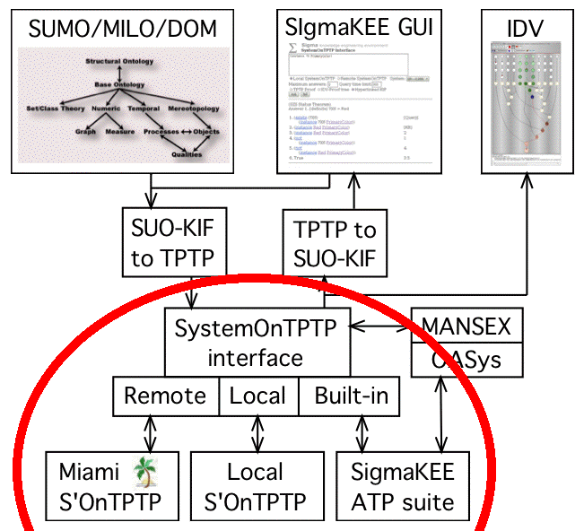

SystemOnTPTP - ATP Systems and Tools

Overview
- Previously translated KB as axioms
- Query translated to TPTP format conjecture
- Queries with answer variables as questions
- Problem submitted to ATP via one of three interfaces
- Results displayed in three ways
Three SystemOnTPTPs
- Built-in - Simplified internal implementation of SystemOnTPTP
(TPTP compliant ATP systems only)
- Local - External call to local
SystemOnTPTP
installation
- Remote - POSTed to
SystemOnTPTP in Miami
- Advantages of each
- Remote supports more ATP systems
- Local and internal do not rely in internet
- Internal runs in UNIX and Windows environments
- User unaware of local vs. internal - internal used if possible